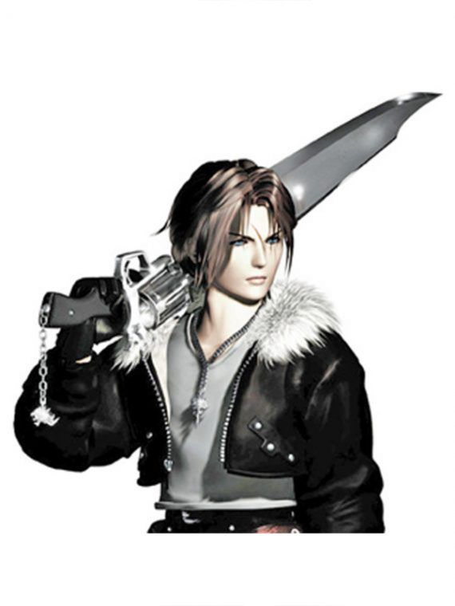
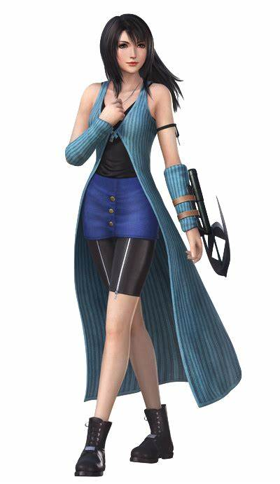
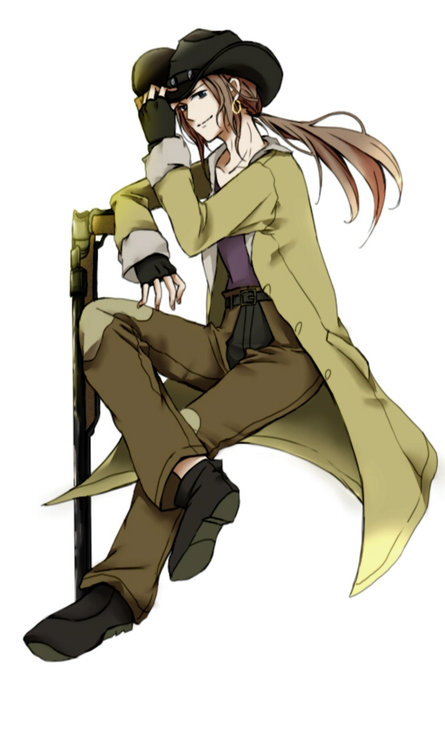
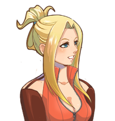
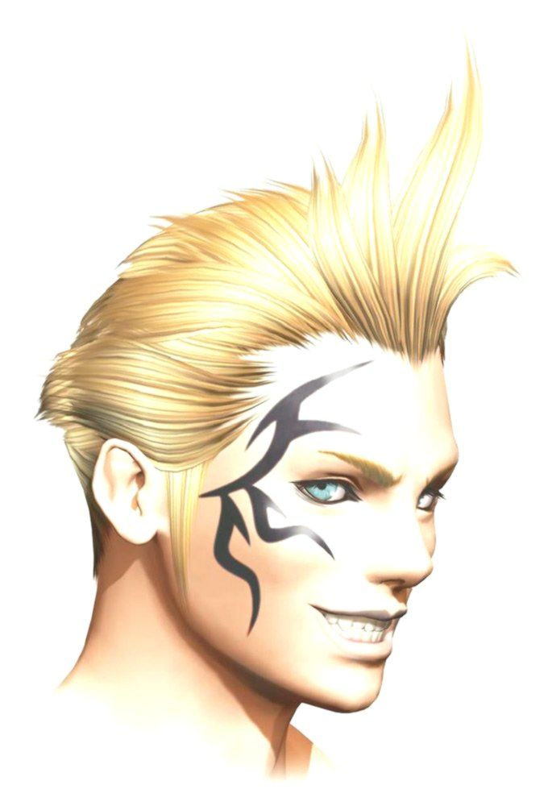
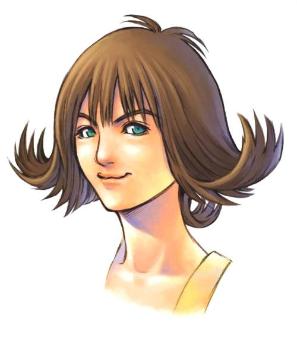

Final Fantasy VIII é o oitavo jogo da série principal Final Fantasy. Foi o segundo Final
Fantasy desenvolvido tanto para PlayStation quanto para PC. Ele foi disponibilizado como um PSOne Classic na
PlayStation Network no Japão em 24 de Setembro de 2009, na América do Norte em 18 de Dezembro de 2009 e na
Europa em 4 de Fevereiro de 2010.
Treze semanas após o seu lançamento, Final Fantasy VIII já havia rendido mais de 50 milhões de dólares nos
Estados Unidos, fazendo dele o Final Fantasy com vendas mais rápidas da época. Adicionalmente, Final Fantasy
VIII foi votado como o 22° melhor jogo de todos os tempos por leitores da revista japonesa Famitsu. Final
Fantasy VIII tornou-se um dos jogos best-sellers da série, vendendo 8.15 milhões de cópias pelo mundo em 31
de março de 2003.
Personagens Principais

Squall Leonhart é o protagonista de Final Fantasy VIII. Um jovem e reservado mercenário SeeD, ele é
conhecido por ser uma pessoa fria, até que começa a questionar a maneira que escolheu viver sua
vida. A arma
de Squall, a gunblade, é uma das armas icônicas da série Final Fantasy. Squall recebe o título de
Comandante
mais tarde no jogo.

Rinoa Heartilly é a heroina de Final Fantasy VIII.
É o interesse amoroso de Squall Leonhart. Ela nasceu em uma família abastada, seu pai liderando o
exército
de Galbad, mas ela está preocupada com o estado do mundo. Rinoa se junta a um movimento de
resistência que
luta contra Galbadia para alcançar a independência de Timber em uma mistura de desejo genuíno de
lutar por
seu mundo e rebelião contra seu pai.
A fiel cadela de Rinoa, Angelo, a acompanha em batalha atacando o inimigo ou auxiliando o grupo.

Irvine Kinneas, um atirador de elite e mulherengo. Apesar de parecer um pouco fútil, Irvine é um homem determinado,
carinhoso e sensível, e o único que sabe da conexão entre todos os membros do grupo.

Kistis Trepe, uma SeeD top de linha que exerce a função de instrutora do Squall. Embora seja bonita e popular, ela
é insegura de si mesma e suas habilidades. Seu carinho por Squall e os outros a faz superar isso.

Zell Dincht, um estudante do Garden apaixonado por cachorro quente cuja técnica em artes marciais é inigualável.
Apesar de ser escandaloso, Zell se esforça para ser um modelo de cadete.

Selphie Tilmitt, uma jovem enérgica e despreocupada que transferida do Trabia Garden. Ela tenta compensar seu passado
triste com uma atitude alegre.